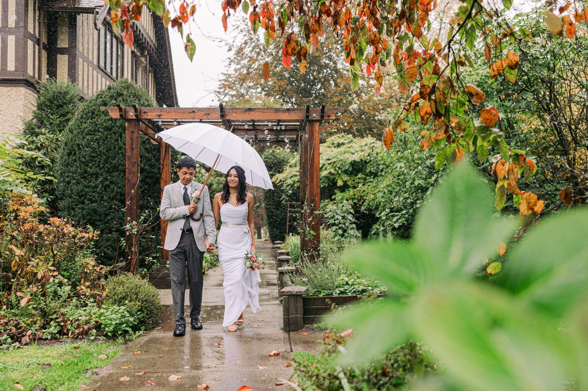
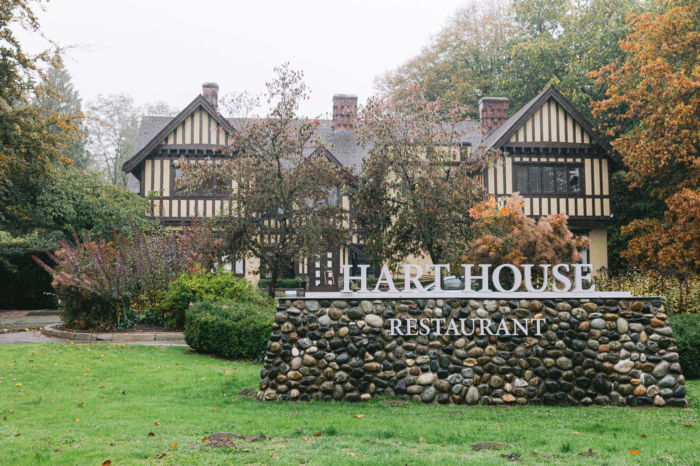
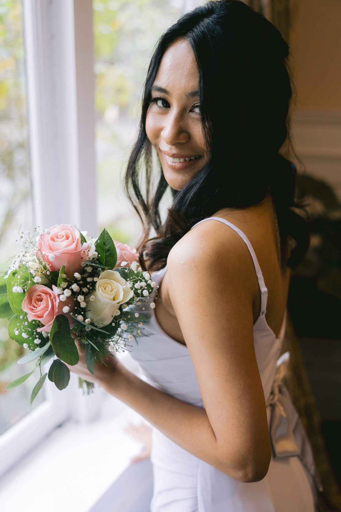
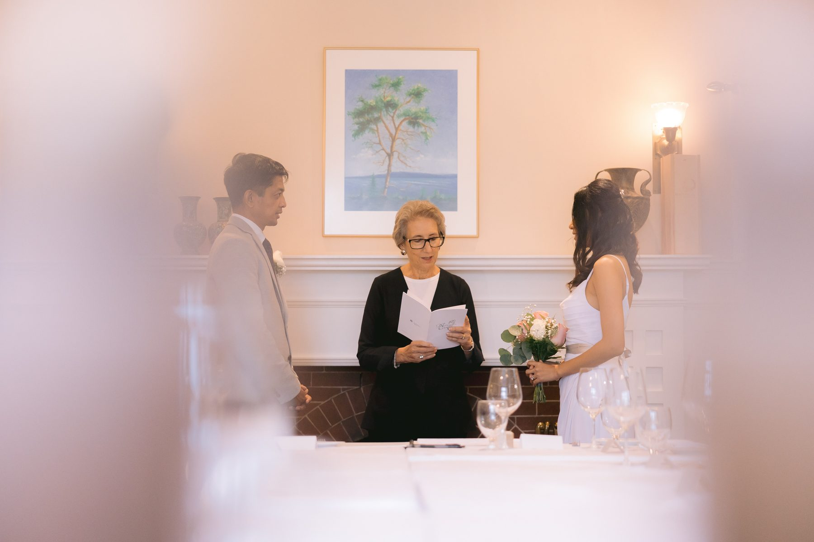
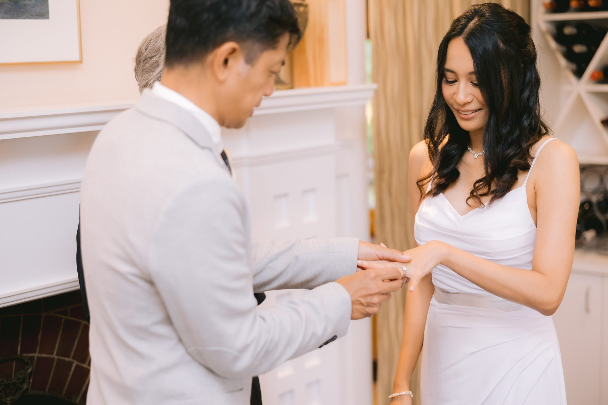
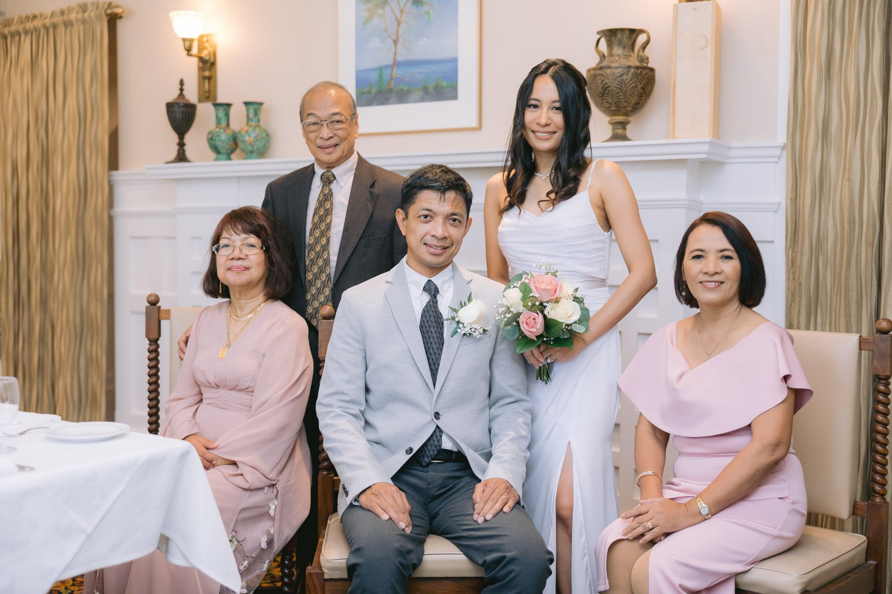
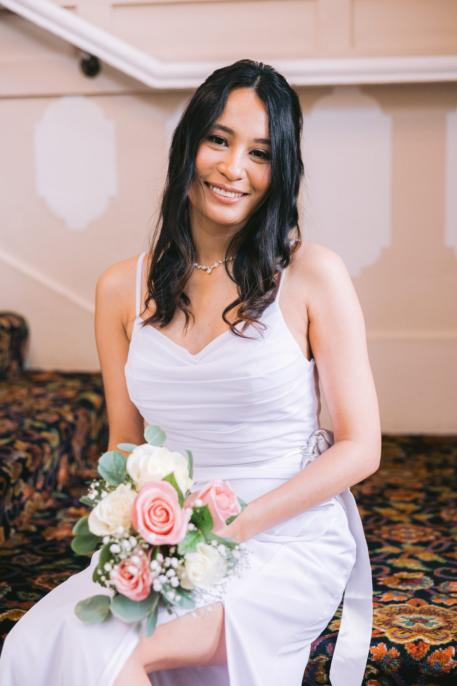
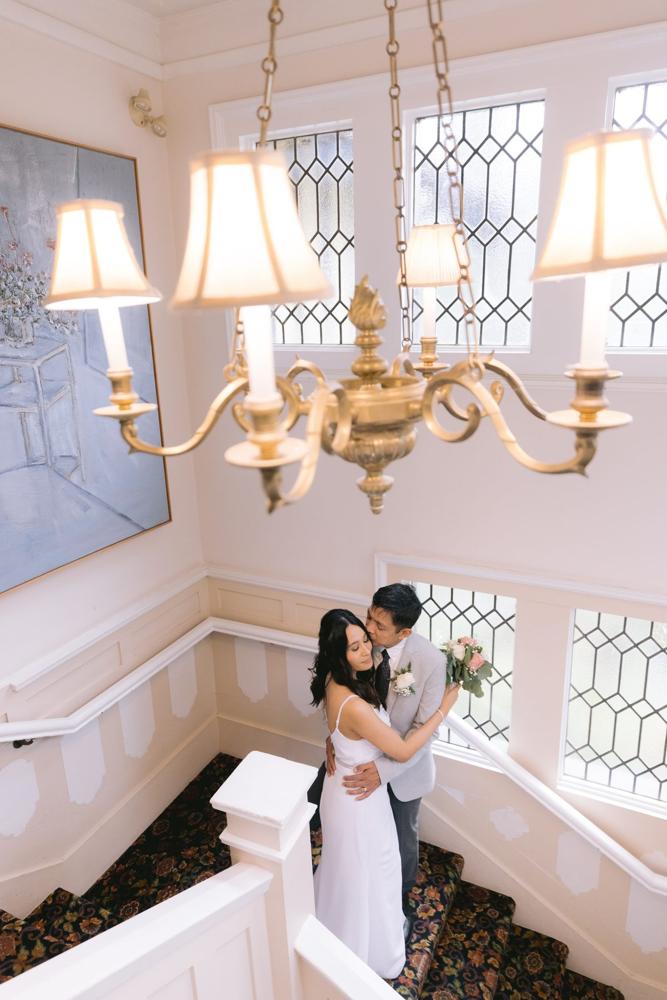
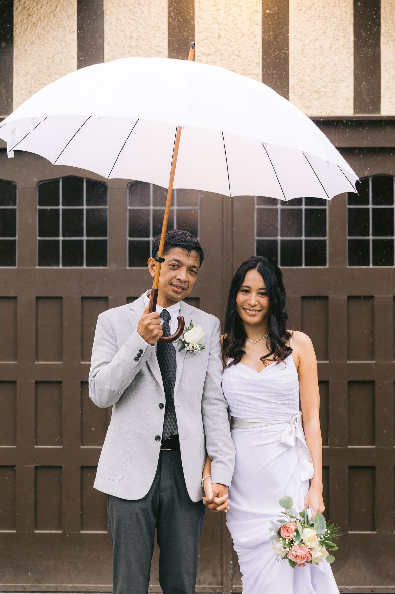

It rained on Havana and Eric all day.
Not a passing shower. A steady grey Lower Mainland October rain that started before we did and never once looked like stopping. Their entire wedding was about twenty people in a Tudor heritage house on the edge of Deer Lake, and the weather did not cooperate for a single hour of it.
It is one of my favourite galleries of the year.
Hart House Restaurant sits in Deer Lake Park in Burnaby, ten minutes off the highway and a world away from it. Tudor Revival, dark timber against pale stucco, a heritage plaque by the door, gardens on every side. It reads like a country house that got lost on its way to England.

Here is why that mattered on a wet day. A house has rooms. Rooms have windows, mantels, staircases, corners. When the outdoors closes on you, a house gives you somewhere else to go that still looks like somewhere.
Compare that to a blank event hall with a rain plan that amounts to moving your chairs six feet to the left. You would have spent this day photographing a wall.
Havana got ready upstairs. One window, soft grey light coming through it, a bouquet of pale roses and eucalyptus in her hands. Grey light gets a bad reputation. It is the most forgiving light there is on a face.

The ceremony happened downstairs in the dining room. Not a hall. The actual dining room, with the tables already set for the dinner that followed, a fireplace at one end and a wine rack at the other. Guests stood. The officiant read from a folder. Eric held Havana's hands and did not let go.

Total ceremony length was under fifteen minutes.
People hear that and assume it was rushed. It was the opposite. When the whole room can hear you breathe, you do not need a processional, three readings and a unity candle to make it feel like something. You need vows and witnesses.

After the register was signed, we did family portraits at the fireplace. Every single guest was in one of them, some in three or four.

That is the thing a two hundred person wedding cannot buy. At twenty guests, the formal photo list stops being an obligation and turns into the point. Nobody is queued up in a hallway. Nobody gets left out because the coordinator is chasing the timeline. Grandparents got a proper portrait instead of a blurry frame from the back of a room.
If you are agonising over your guest list, that is the honest tradeoff. A bigger list gets you more people at your party. A smaller list gets you more people in your photos.
Portrait time came and the rain got heavier. So we went inside and used the stairs.

The main staircase at Hart House runs up through a two storey space with leaded glass windows on one wall and a chandelier hanging in the middle of it. On a bright day it would be too contrasty to use. On a flat grey day it turned into an enormous soft box, and the whole stairwell glowed.

Scout the interiors of your venue before you book it. Not the ballroom, everyone shows you the ballroom. Ask what the lobby looks like, what the stairs look like, whether there is a window anywhere with nothing ugly outside it. That is your rain plan, and it is worth more than a tent.
Somebody produced a white umbrella. We used it for the next forty minutes.

A white umbrella is not a prop, it is a lighting tool. It bounces daylight down onto two faces and puts a clean edge around them. Get one. Not a black golf umbrella from the trunk of a car, an actual pale one. It costs about thirty dollars and it is the highest return item on any Vancouver wedding shopping list.
The gardens were soaked and the leaves were turning and the paths had gone dark with water, which meant the colour in Havana's bouquet and the white of her dress had nothing to compete with. Rain saturates everything. Wet stone, wet timber, wet garden. Nothing in a photo looks flat when it is wet.
They were laughing in most of these. Not performing for me. Laughing because they were two people huddled under one umbrella with wet shoes, and that is funny.
Yes, with a clear picture of what it is.
Take it if your guest count is small, if you want the day to feel like dinner at a beautiful house instead of an event, and if the food matters to you more than the dance floor. The room seats what it seats. There is no separating a ceremony space from a reception space, because they are the same space and it works.
Skip it if you have a hundred and fifty guests, if you need a late night dance floor, or if your whole vision depends on the garden. October in Burnaby is a coin toss and the garden might not be available to you.
What Havana and Eric had was a house, a short ceremony, twenty people who all mattered, a staircase, and an umbrella. The forecast took the outdoor version of their day away and gave them a better one back.
SimplyWed Studio is a Vancouver wedding and elopement photography studio. Send us your date through the contact page and we will walk your venue for indoor light before you commit to a rain plan.
← Back to the journal